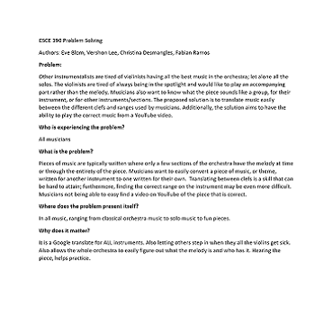

Hello! I am @cdesmang!
Other instrumentalists are tired of violinists having all the best music in the orchestra; let alone all the solos. The violinists are tired of always being in the spotlight and would like to play an accompanying part rather than the melody. Musicians also want to know what the piece sounds like a group, for their instrument, or for other instruments/sections. The proposed solution is to translate music easily between the different clefs and ranges used by musicians. Additionally, the solution aims to have the ability to play the correct music from a YouTube video.
With all of our combined brain power, my group and I were able to create a list of brainstorm ideas!
Personas of potential users of Music for All.
A day in the life of potential users of Music for all.
A day in the life of potential users of Music for all.
Basic idea of the run-through experience of using Music for All.
An interactive prototype of the app. Allows for all functionality to be experienced by the user.